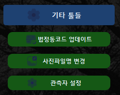
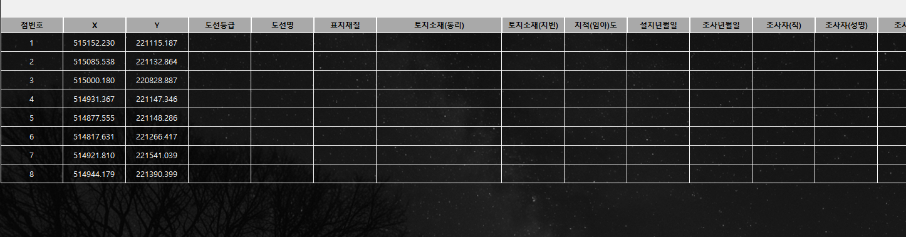

지적삼각보조(도근)점 성과표 작성 사용설명서
1. 개 요
이 프로그램은 지적삼각보조(도근)점 성과표를 작성하기 위해 고안되었으며, 추가적으로 위성관측데이터로부터 관측기록부/결과부 등을 작성할 수 있도록 수정되었습니다. 입력데이터에 따라 다음과 같은 기능을 제공하며 이 때 입력되는 모든 데이터는 DRM이 해제된 파일이어야 합니다.
1)위성관측데이터 입력
- 관측기록부/결과부 작성
- 일람표 작성
- tr.dat 생성
- 지적삼각보조(도근)점 성과표 작성
2) tr.dat 입력
- 지적삼각보조(도근)점 성과표 작성
2. 준비파일
원활한 작업 진행을 위해 필요한 준비파일은 다음과 같습니다.
다음 파일들 중 Cif 파일은 복호화된 파일이어야 하며, 모든 파일은 DRM이 해제된 파일만 사용가능합니다
1) 위성관측데이터 입력
- 모바일랜디고에서 다운받은 위성관측데이터(엑셀)
- 한 폴더에 저장된 사진파일(DRM 해제)
- 복호화된 Cif 또는 랜디고/LXGIS를 통해 변환된 Shp파일
2) tr.dat 입력
- tr.dat 파일
- 한 폴더에 저장된 사진파일(DRM 해제)
- 복호화된 Cif 또는 랜디고/LXGIS를 통해 변환된 Shp파일
3. 화면 구성
이 프로그램은 다음과 같이 화면이 구성되어 있습니다.
1) 사이드바 메뉴
입력 단계별로 작성되었으며, 대부분 순차적으로 진행하면 됩니다.
2) 메인 화면
데이터 편집 및 이미지 편집시 사용되는 공간입니다.
3) 메뉴
표 편집모드/ 사진 편집 모드간 변경을 위한 버튼과 이 페이지를 띄우는 버튼이 있습니다.
4) 상태표시줄
진행 과정에 대한 메시지 및 정보를 보여줍니다.
4. 사이드바 메뉴
1) 기타 툴들

(1) 법정동코드 업데이트
code.go.kr에서 법정동코드를 다운로드합니다.
성공적으로 다운로드되면 프로그램 설치 폴더에 "법정동코드 전체자료.txt"이라는 파일이 생성됩니다.
(2) 사진파일명 변경
tr.dat와 사진폴더를 입력하여 각 사진파일의 이름을 기준점번호와 일치하도록 변경할 수 있습니다.
다만, 이 기능은 사진파일이 GPS위치정보를 포함하고 있어야 하며사진파일의 GPS위치로부터 50m반경에 포함되는 기준점번호로 수정됩니다.
(3) 관측자 설정
가. 사용자 추가
가. 왼쪽 리스트의 팀장명을 더블클릭하시면 해당 팀에 대한 속성을 확인할 수 있으며, 오른쪽에서 속성을 수정/저장할 수 있습니다.
나. 왼쪽 리스트에서 우클릭하면 리스트 전체를 삭제하거나 선택한 팀을 삭제할 수 있습니다.
나. VWorld API 설정
가. VWorld API를 통해 위성사진을 취득하기 위한 설정입니다.
나. VWorld API Key 및 인증만료일을 입력하고 저장합니다.
다. 개발키: 개발을 목적으로하며 유효기간은 6개월, 최대 3회 연장가능합니다.
라. VWorld 가입 및 API키 요청 방법은 맨 마지막 챕터를 참조하시기 바랍니다.
2) RTK 기록부 외
(1) 관측데이터(xlsx)
모바일 랜디고를 통해 다운로드 받은 관측데이터 엑셀파일을 입력합니다.
(2) 번호-시작 정렬
기준점번호와 관측시간을 기준으로 표를 정렬합니다.
(3) 타임 조정
관측시간 간격(데이터 취득간격 60초 이상, 관측간격 60분 이상)을 조정합니다.
조정에 의해 변경된 시각은 붉은색으로 표시됩니다.
1회 관측시작시간을 기준으로 조정되며 2회 관측시간은 다른 기준점 관측시간과 중복될 수 있음을 숙지하시기 바랍니다.
(4) Cif/Shp 입력
Cif 또는 Shp파일을 입력하여 해당 기준점이 위치한 소재지, 지번, 도호를 가져옵니다.
Cif를 Shp로 변환하려면 LXGIS를 통해 생성하거나 랜디고에서 Shp로 내보내기 기능을 통해 변환할 수 있습니다.
미등록지, 필지간 이격, Cif/Shp 추출 범위 외에 위치한 기준점은 공란으로 표시되며 상태표시줄에 해당 기준점 번호를 보여줍니다.
(5) 관측자(성명)
기타툴들-관측자 설정에 의해 저장된 팀을 선택할 수 있습니다.
자격, 직급, 안테나번호는 자동으로 입력되며 설정의 변경사항은 관측자 설정을 통해 변경하는 것을 추천합니다.
(6) 접수번호
위성관측 표지에 입력되는 접수번호입니다.
(7) 기준점 종류
지적삼각점, 지적삼각보조점, 지적도근점 중에서 선택할 수 있습니다.
(8) 대표 지번
위성관측 표지에 입력되는 소재지입니다. 00(시군구) 00(읍면동) 00(리) 000번지 형식으로 입력합니다.
(9) 지구명
위성관측 표지/관측기록부/관측결과부에 입력되는 지구명입니다. 다만, "~지구"로 끝나지 않으면 표지에서는 지구명을 입력하지 않습니다.
(10) 지구특성
위성관측관측기록부에 입력되는 지구특성입니다.
(11) 안테나번호
위성관측관측기록부에 입력되는 안테나번호입니다. 관측자 설정에서 자동으로 불러옵니다.
(12) 관측기록부 등
작성된 표를 기준으로 표지/관측기록부/관측결과부/기준점일람표를 작성합니다. 이때, 각 직각좌표 및 경위도 좌표에 대한 자리수는 변환되어 작성됩니다.
(13) 데이터 전환
기준점성과표 작성에 공통적으로 적용되는 값(기준점번호, 좌표 및 관측자, 관측일자 등)을 공통데이터 입력창으로 넘깁니다.
3) 데이터 입력
tr.dat 입력을 통해 기준점성과표를 작성하고자 하는 경우는 여기서부터 시작합니다. RTK 데이터 입력인 경우 이 단계는 건너뜁니다.

(1) tr.dat 입력
tr.dat 파일을 선택하여 표를 생성합니다.
(2) 기존 프로젝트
이전에 작성된 프로젝트 파일(*.pickle)을 불러옵니다. 7) 내보내기를 통해 작성된 프로젝트 파일을 저장할 수 있습니다.
4) 공통값 입력

(1) 도선등급
해당 도선의 도선등급을 입력합니다. 값은 숫자값으로만 입력합니다.
(2) 도선명
해당 도선의 도선명을 입력합니다. 1등 도선은 가, 나, 다... 와 같이 입력하며 2등 도선은 ㄱ, ㄴ, ㄷ... 등으로 표시합니다.
(3) 설치년월일
해당 도선의 설치년월일을 입력합니다. 입력은 YYYY-MM-DD(년-월-일) 형식으로 입력하며 RTK 데이터 작업을 한 경우 자동입력됩니다.
(4) 조사년월일
해당 도선의 조사년월일을 입력합니다. 입력은 YYYY-MM-DD(년-월-일) 형식으로 입력하며 RTK 데이터 작업을 한 경우 자동입력됩니다.
(5) 조사자(직)
관측자의 직급을 입력합니다. RTK 데이터 작업을 한 경우 자동입력됩니다.
(6) 조사자
관측자의 이름을 입력합니다. RTK 데이터 작업을 한 경우 자동입력됩니다.
(7) 조사내용
조사내용 입력합니다. 기본값으로 "신설"로 입력됩니다.
(8) 좌표계
해당 좌표의 좌표계를 입력합니다. 기본값으로 "세계측지계(중부)"가 입력되어 있습니다.
(9) 적용
위에 입력된 내용을 표에 적용합니다.
5) 소재지 입력
tr.dat 입력시에 소재지 관련 데이터를 검색하기 위한 기능이며, RTK 데이터 입력시에는 사용하지 않습니다.

(1) Cif에서 검색
Cif에서 각 기준점의 소재지, 지번, 도호를 검색하여 표에 표시합니다.
(2) Shp에서 검색
Shp에서 각 기준점의 소재지, 지번, 도호를 검색하여 표에 표시합니다.
6) 이미지 삽입

(1) 사진폴더 선택
사진이 저장된 폴더를 선택합니다.
(2) 확장자 선택
해당 사진의 확장자를 선택합니다.
(3) 편집이미지(체크박스)
이 프로그램을 통해 이미 편집된 사진이 있으면 체크합니다. 이 경우 사진파일명은 (기준점번호)_edit.png이며 자동으로 확장자는 png로 변경됩니다.
(4) 적용
위에서 선택한 내용들이 표에 반영됩니다.
** 사진에 거리 기재하는 부분은 6. 사진편집 파트를 참고하세요.
7) 내보내기
(1) 프로젝트 저장
작성된 표를 저장합니다. 확장자는 pickle이며 데이터 입력에서 이 파일을 가져오게 되면 동일한 표를 얻을 수 있습니다.
(2) 성과표 엑셀저장
기준점 성과표를 엑셀로 저장합니다.
5. 메인 화면
1) RTK 데이터 입력시
열 번호을 우클릭하여 필요없는 관측기록은 삭제할 수 있습니다.
최종 정리된 열의 개수는 짝수개(2회 관측)여야 합니다.
관측결과부/기준점일람표/성과표는 1회 관측자료를 기준(GNSS에 의한 지적측량규정)으로 작성됩니다.
사이드바 메뉴의 [RTK 기록부 등]버튼을 이용하여 대부분 입력가능합니다.
채우기 핸들을 통해 단일 행 또는 단일 열의 값을 복사할 수 있습니다.
여기서 작성된 표가 모든 기록의 기준이 되므로 빈칸없이 작성하는 것을 추천합니다.
(1) 컬럼 숨기기()
몇몇 컬럼을 숨겨 표를 한 화면에 표시합니다.
버튼을 누를 때마다 컬럼숨기기-보이기가 반복됩니다.
(2) 자동번호 입력()
시작번호를 입력하면 자동으로 기준점 번호를 입력합니다.
관측순서와 기준점 부여순서가 일치하지 않으면 직접 번호를 수정하여야 합니다.
(3) tr.dat 생성()
1회 관측자료를 기준으로 tr.dat를 생성합니다.
(4) 변경내용 저장()
변경된 표를 기준으로 새로운 관측 data를 생성합니다.
2) tr.dat 입력시

공통값 이외에 개별적으로 입력하여야 할 값들에 대해 빠짐없이 입력합니다.
소재지 관련 값들은 사이드바 메뉴의 [소재지 검색]버튼을 통해 Cif나 Shp을 이용하여 입력할 수 있습니다.
사진 관련 값들은 사이드바 메뉴의 [이미지 삽입]버튼을 통해 입력할 수 있습니다.
6. 사진 편집
1) 모드 변경
메뉴의 모드변경버튼()을 통해 표-사진편집 모드간 변경이 가능합니다.
사이드바 메뉴의 [이미지 삽입]버튼을 통해 사진 폴더 및 파일명이 입력된 후에 모드변경을 하시기 바랍니다.
2) 사진 편집 모드
표는 사진이 저장된 폴더와 파일명에 컬럼에 맞도록 다른 컬럼들은 숨겨집니다.
표 위에서 각 번호별로 더블클릭하면 해당 사진을 편집하실 수 있습니다.
사진파일명과 기준점번호가 일치하면 즉시 사진이 보여지며 일치하지 않으면 [불러오기]버튼()을 통해 사진을 입력합니다.
상태 표시줄에 편집 중인 사진 정보가 표현됩니다.
[거리입력]버튼(, 단축키: Ctrl+L)을 통해 거리를 입력할 수 있습니다.
시작점-끝점-거리입력 지점을 순차적으로 누르고 현장에서 측정한 거리를 입력합니다.
단순 문자는 [텍스트 입력]버튼(, 단축키: Cntl+T)을 통해 입력할 수 있습니다..
입력된 선은 선택하여 각 점을 이동할 수 있고, 문자는 더블클릭하여 내용을 수정할 수 있습니다.
사진 편집기 메뉴 버튼을 이용하여 선 종류, 굵기, 색상 및 문자의 글꼴, 크기, 스타일, 색상 등도 변경할 수 있습니다.
문자 선택 후 [문자 스타일]버튼()을 통해 더 세부적인 설정을 할 수 있습니다.
제목, 항목 2가지 스타일을 지원하며 테두리선 및 글꼴, 배경색 등에 대해 각각 개인별로 지정할 수 있습니다. 체크박스 선택 후 [Ok]버튼을 누르면 저장됩니다.
사진 편집이 끝나면 [저장 및 적용]버튼(, 단축키: Cntl+Enter)을 눌러야 최종 저장 및 반영됩니다.
정상적으로 반영되면 표에 저장폴더명과 파일명이 변경됩니다.
이 때, 사진은 사진 폴더 내에 새로운 폴더 '_거리입력_'이 생성되고 그 안에 {기준점번호}_edit.png 형식으로 저장됩니다.
나머지 기준점들에 대해서도 같은 방법으로 사진을 편집하고, 표 편집모드로 변경하여 성과표 내보내기와 같은 작업을 진행합니다.
7. VWorld API Key 발급
1) 회원가입
V-World 사이트로 이동하여 회원가입을 합니다.
회원가입 방법은 생략하겠습니다.
2) 오픈API 인증키 발급
표는 사진이 저장된 폴더와 파일명에 컬럼에 맞도록 다른 컬럼들은 숨겨집니다.
표 위에서 각 번호별로 더블클릭하면 해당 사진을 편집하실 수 있습니다.
사진파일명과 기준점번호가 일치하면 즉시 사진이 보여지며 일치하지 않으면 [불러오기]버튼()을 통해 사진을 입력합니다.
상태 표시줄에 편집 중인 사진 정보가 표현됩니다.
[거리입력]버튼(, 단축키: Ctrl+L)을 통해 거리를 입력할 수 있습니다.
시작점-끝점-거리입력 지점을 순차적으로 누르고 현장에서 측정한 거리를 입력합니다.
단순 문자는 [텍스트 입력]버튼(, 단축키: Cntl+T)을 통해 입력할 수 있습니다..
입력된 선은 선택하여 각 점을 이동할 수 있고, 문자는 더블클릭하여 내용을 수정할 수 있습니다.
사진 편집기 메뉴 버튼을 이용하여 선 종류, 굵기, 색상 및 문자의 글꼴, 크기, 스타일, 색상 등도 변경할 수 있습니다.
문자 선택 후 [문자 스타일]버튼()을 통해 더 세부적인 설정을 할 수 있습니다.
제목, 항목 2가지 스타일을 지원하며 테두리선 및 글꼴, 배경색 등에 대해 각각 개인별로 지정할 수 있습니다. 체크박스 선택 후 [Ok]버튼을 누르면 저장됩니다.
사진 편집이 끝나면 [저장 및 적용]버튼(, 단축키: Cntl+Enter)을 눌러야 최종 저장 및 반영됩니다.
정상적으로 반영되면 표에 저장폴더명과 파일명이 변경됩니다.
이 때, 사진은 사진 폴더 내에 새로운 폴더 '_거리입력_'이 생성되고 그 안에 {기준점번호}_edit.png 형식으로 저장됩니다.
나머지 기준점들에 대해서도 같은 방법으로 사진을 편집하고, 표 편집모드로 변경하여 성과표 내보내기와 같은 작업을 진행합니다.